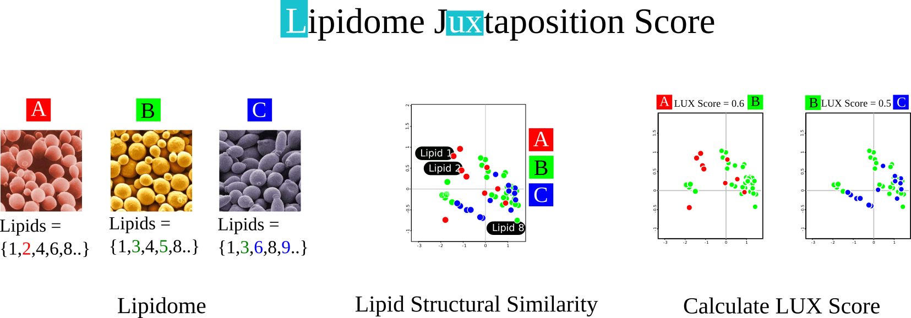

Illustration of Fruit Fly © Nara
Illustration of Fruit Fly © Nara
Abstract
A lipidome is the set of lipids in a given organism, cell or cell compartment and this set reflects the organism’s synthetic pathways and interactions with its environment. Recently, lipidomes of biological model organisms and cell lines were published and the number of functional studies of lipids is increasing. In this study we propose a homology metric that can quantify systematic differences in the composition of a lipidome. Algorithms were developed to 1. consistently convert lipids structure into SMILES, 2. determine structural similarity between molecular species and 3. describe a lipidome in a chemical space model. We tested lipid structure conversion and structure similarity metrics, in detail, using sets of isomeric ceramide molecules and chemically related phosphatidylinositols. Template-based SMILES showed the best properties for representing lipid-specific structural diversity. We also show that sequence analysis algorithms are best suited to calculate distances between such template-based SMILES and we adjudged the Levenshtein distance as best choice for quantifying structural changes. When all lipid molecules of the LIPIDMAPS structure database were mapped in chemical space, they automatically formed clusters corresponding to conventional chemical families. Accordingly, we mapped a pair of lipidomes into the same chemical space and determined the degree of overlap by calculating the Hausdorff distance. We named this metric the ‘Lipidome jUXtaposition (LUX) score’. First, we tested this approach for estimating the lipidome similarity on four yeast strains with known genetic alteration in fatty acid synthesis. We show that the LUX score reflects the genetic relationship and growth temperature better than conventional methods although the score is based solely on lipid structures. Next, we applied this metric to high-throughput data of larval tissue lipidomes of Drosophila. This showed that the LUX score is sufficient to cluster tissues and determine the impact of nutritional changes in an unbiased manner, despite the limited information on the underlying structural diversity of each lipidome. This study is the first effort to define a lipidome homology metric based on structures that will enrich functional association of lipids in a similar manner to measures used in genetics. Finally, we discuss the significance of the LUX score to perform comparative lipidome studies across species borders.
 LUX Score is an unbiased metric to measure global differences between a pair of lipidomes. It is based on structural similarity between constituent lipids. It is a distance measure, always between 0 and 1, indicating complete-similarity and complete-dissimilarity respectively